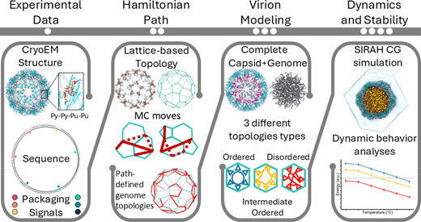
Santos et al., J. Chem. Inf. Model , 2026.
We report a methodology combining AI-based structural prediction, lattice MC simulations, and multiscale MD with SIRAH to generate and simulate 3D topological models of complete virions.
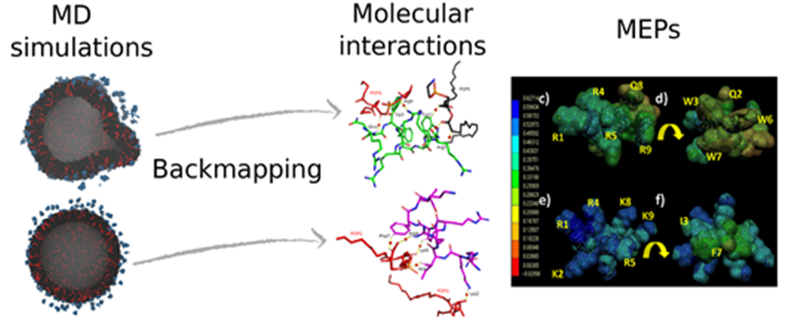
Frigini et al., Phys. Chem. Chem. Phys., 2026.
We report here a theoretical and experimental study demonstrating the key influence of net positive atomic charges on small peptides with antimicrobial activity.
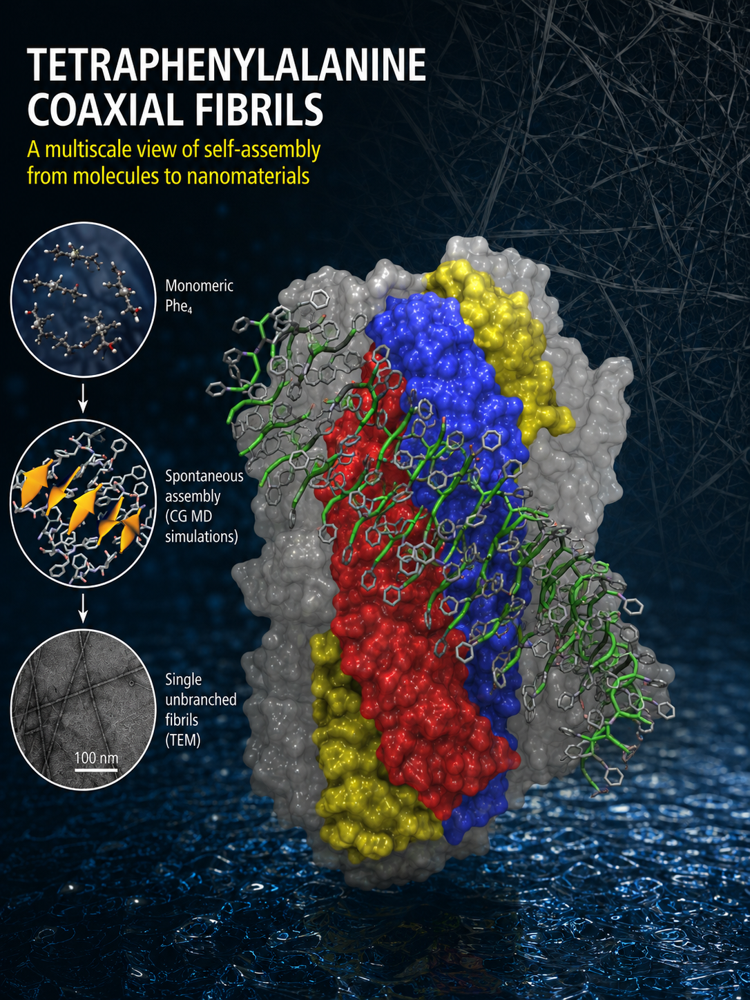
Barrera et al., Nanoscale, 2026.
CG simulations predicted the structure of Tetraphenylalanine peptides amyloid fibers. See the Nanoscale paper here.
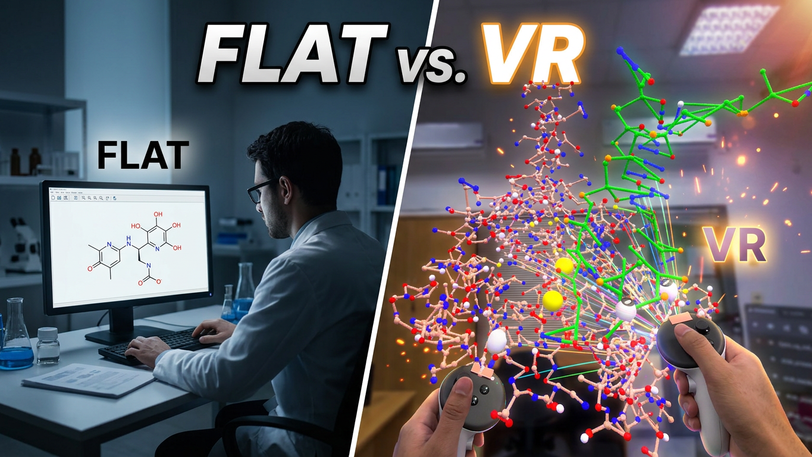
We're taking SIRAHFF to the next level! Using NANOME v2.0, we dive into Virtual Reality to explore the intricate features of our coarse-grained force field to explore MD in immersive and mixed reality.
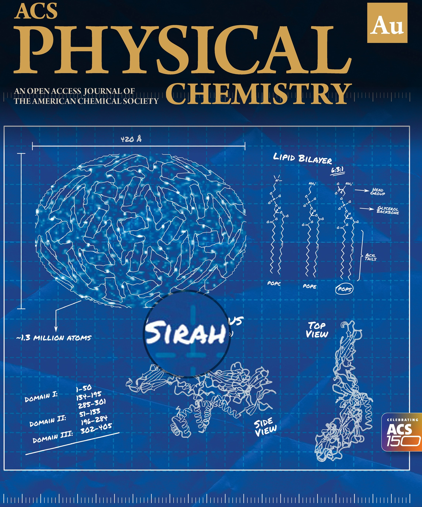
Collaborative South American effort in Computational Virology gets cover image. Read more about the Lipid Architecture of Zika Virus .
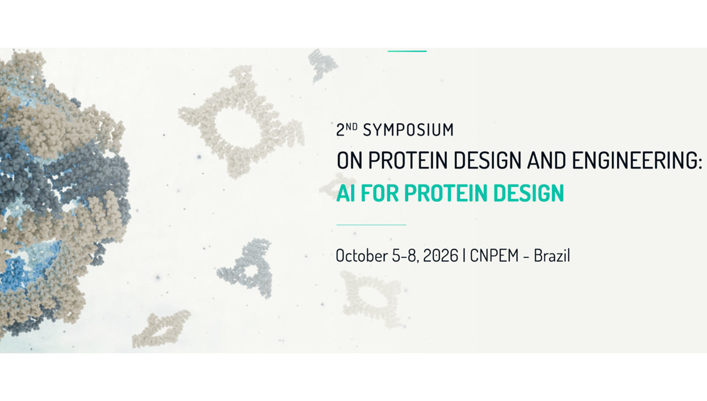
The 2nd Symposium on Protein Design and Engineering (SPDE) is taking place October 5–8, 2026, in Campinas, Brazil. This event brings together researchers, industry pioneers, and emerging scientists to explore protein design. Learn more and register.
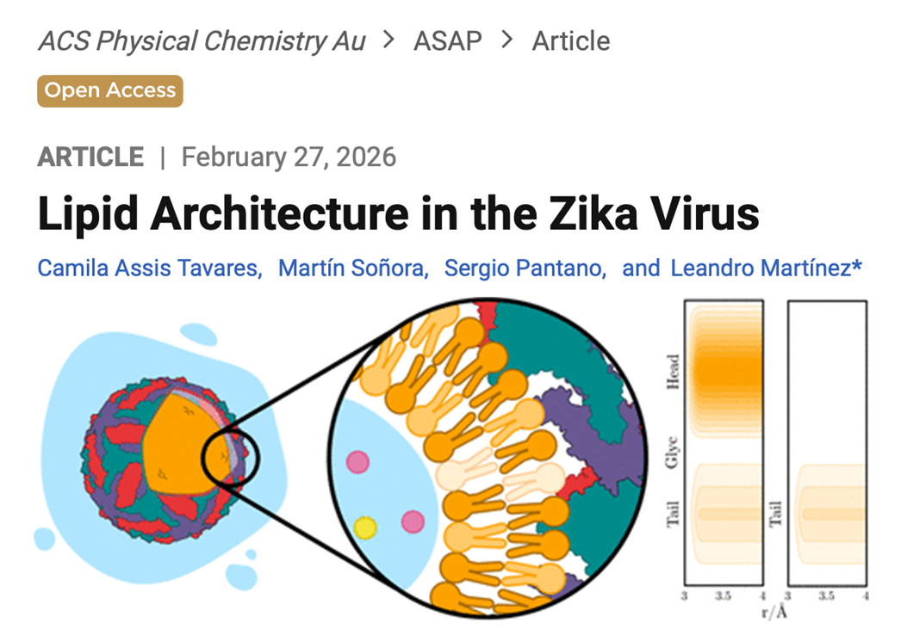
Tavares et al., ACS Phys. Chem. Au, 2026.
In this just accepted paper, SIRAH molecular dynamics simulations of the Zika virus were analyzed to characterize lipid organization inside the virus.
Our paper "The SIRAH force field: A suite for simulations of complex biological systems at the coarse-grained and multiscale levels" by Klein at al. was honored as the Paper of the Year by the Journal of Structural Biology.
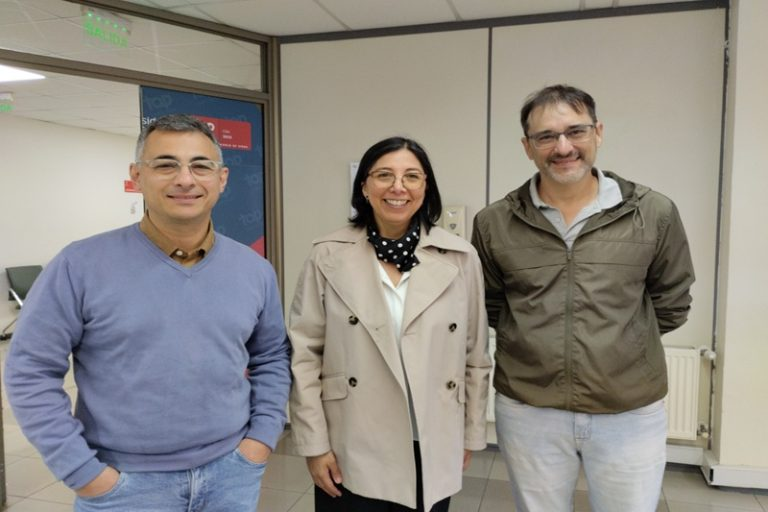
La Universidad Andrés Bello (Chile) realizó el taller “Herramientas Avanzadas en Simulación Biomolecular” que contó con la participación de los investigadores Sergio Pantano, del IPMont (Uruguay), y Leandro Martínez, de la Unicamp (Brasil).
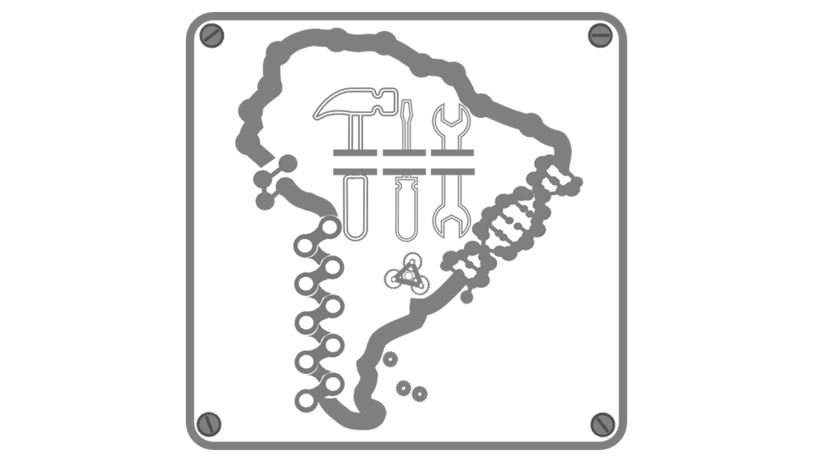
Ballesteros-Casallas et al., JCIM 2025. SIRAH Tools GUI is a graphical user interface that integrates with VMD and extends the capabilities of the SIRAH Tools plugin for analyzing molecular simulations performed with the SIRAH force field.
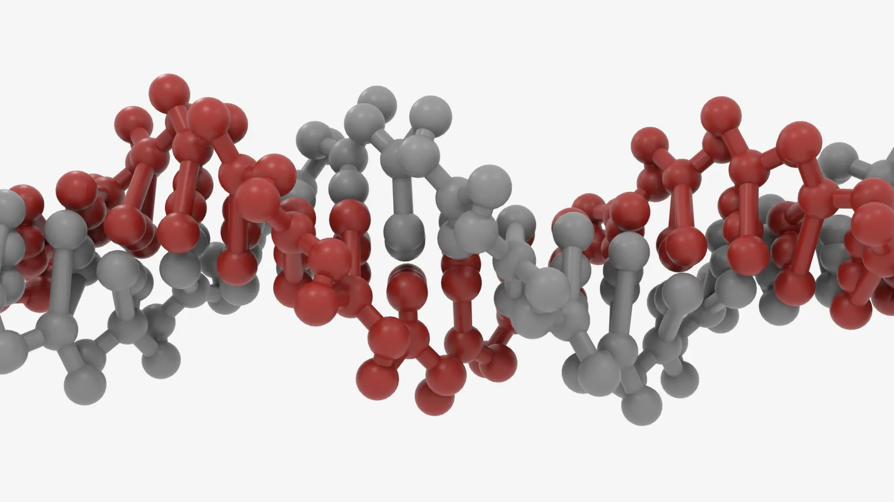
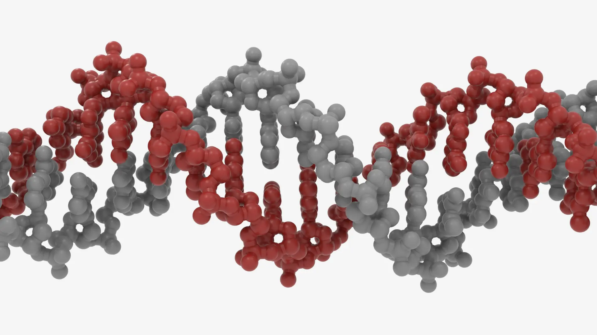
CG simulations with the SIRAH force field inherited setups, formats, atom types, partial charges, and other parameters from standard atomistic MD simulations. Consequently, anyone familiar with GROMACS, AMBER, or NAMD can easily perform a SIRAH CG simulation.
Download SIRAH at SIRAH GitHub and uncompress the *.tgz file
Add all hydrogens following the correct protonation states of each residue at a given pH
Map an all-atom coordinate file to CG representantion with the SIRAH Tool's cgconv.pl script
Build the topology of your system using Ambertools or GMX tools just like standard atomistic MD simulations
Run your CG sytem with with AMBER, GROMACS, or NAMD
Analyze your simulation with VMD and the SIRAH Tools plugin in VMD
You can learn how to use SIRAH in AMBER, GROMACS, and NAMD by reading the helpful tutorials on the SIRAH documentation page.
There are also tutorials on how to use SIRAH Tools and do trajectory analysis with VMD.